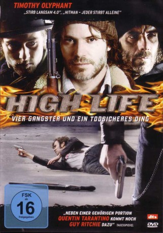

#7631 High Life
 
 IMDB-Wertung: 6.2 / 10
IMDB-Wertung: 6.2 / 10  Tomatometer: 80
Tomatometer: 80  Metascore: 0
Metascore: 0 
In den frühen 1980er Jahren ist der Junkie und Gelegenheitsgauner Dick nicht eben angenehm überrascht, als eines Tages sein mit allen Wassern gewaschener und gefährlich unberechenbarer Ex-Zellennachbar Bug vor der Tür steht. Bug ist frisch aus dem Gefängnis entlassen worden und muss sich an die neue Zeit mit ihren Moden, Klängen und Designerdrogen erst einmal gewöhnen. Besondere Aufmerksamkeit finden die neuartigen Geldautomaten, die an jeder Ecke aus dem Boden schießen. Da müsste für findige Panzerknacker doch was zu holen sein.
Jahr: 2009
Dauer: 78 Minuten
FSK: 16
Land: Kanada Studio: Koch MediaTonspuren: DTS - ,
Untertitel: Deutsch,
Auflösung: 1080p (1920x1080) Größe: 7424 MB
Genre: Komödie, Krimi
Regisseur: Gary Yates
Drehbuch: Gregory Groves
Soundtrack: Randy Newman
Darsteller:
 Stephen Eric McIntyre als Bug
Stephen Eric McIntyre als Bug Timothy Olyphant als Dick
Timothy Olyphant als Dick Joe Anderson als Donnie
Joe Anderson als Donnie Rossif Sutherland als Billy
Rossif Sutherland als Billy- Jon Ted Wynne als Strung-Out Doctor
- Steven Ratzlaff als Prison Guard
- Mark McKinney als Jeremy
- Leigh Enns als Addict 1
 Will Woytowich als Addict 2
Will Woytowich als Addict 2- Susan Kelso als Addict 3
- Sarah Constible als Alex
 Aaron Hughes als Auto Mechanic 1
Aaron Hughes als Auto Mechanic 1- Doreen Brownstone als Cheesecake Woman
- Joy Lazo als Woman in Store
- Ernesto Griffith als Ken
- Kelly Wolfman als Lynn
- Turk Scatliff als Jamie
- Harry Nelken als Addict 4
- Tracy Beemer als Nurse
- Ross McMillan als Bank Manager
- Mike Bell als Moondog
- Brittany Scobie als Alma
- Erik Fjeldsted als Auto Mechanic 2
- Marjorie Roden als Knitter at Meeting , uncredited
- Gordon Tanner als Addict 5 , uncredited
Datei: X:\2009(G-M)\High Life (2009, FSK16, 1920x1080).mkv seit 29.11.2017
Festplatte: HD 2009(G-Z)-2010(A-F)
 Es gibt insgesamt 82 Filme in der Gruppe '2009(G-M)'
Es gibt insgesamt 82 Filme in der Gruppe '2009(G-M)'